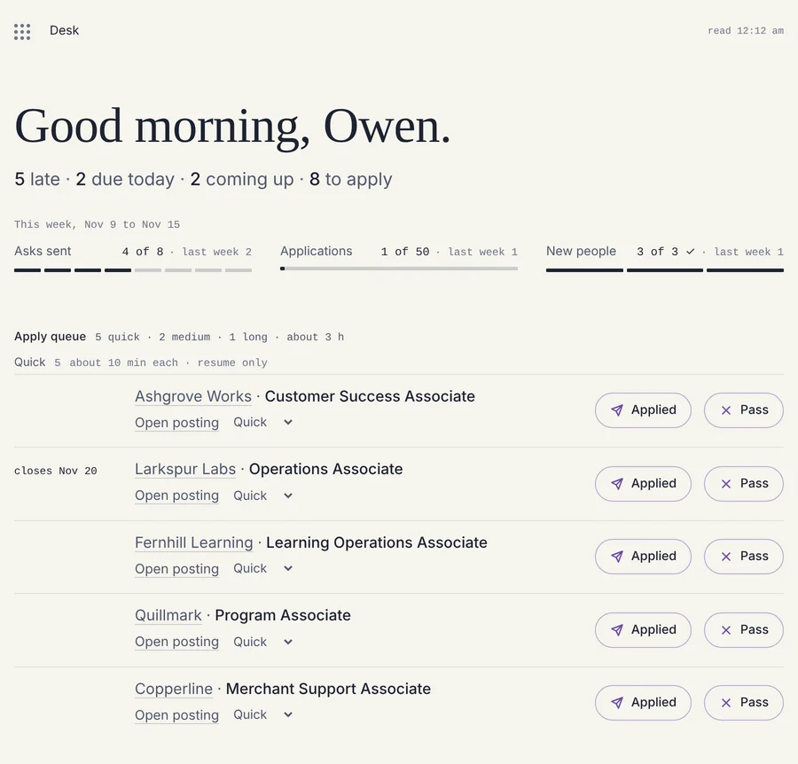

Job search system 2026
A job search is really three searches at once: a company doing something I care about, a role there I actually fit, and someone I know who works there. I designed a system that finds the overlap every morning, and directed Claude Code to build it.
How it works